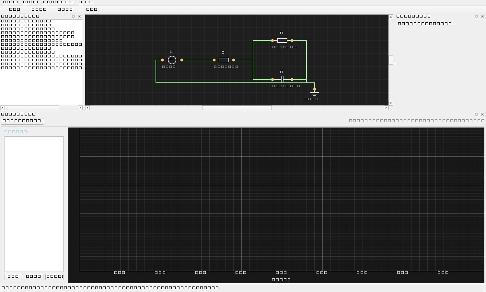
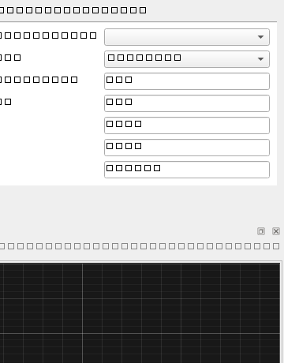
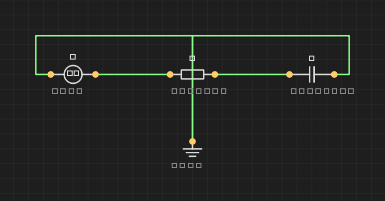
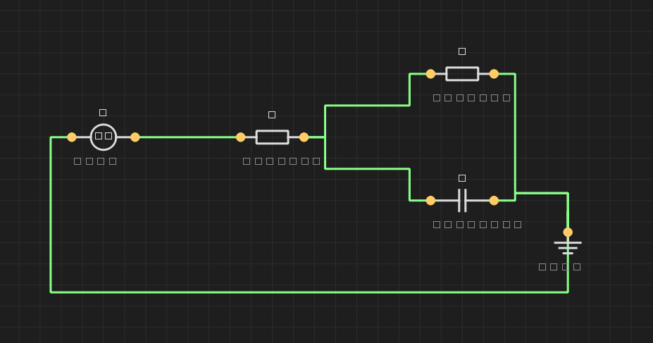
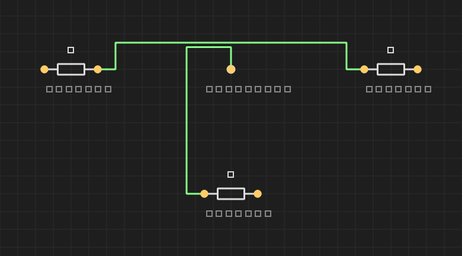
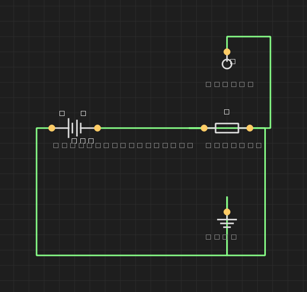
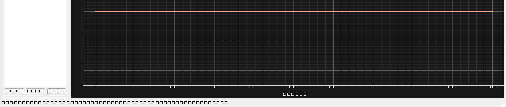

BatSim is a PSpice-style schematic editor combined with a Python battery & BMS simulation engine. Press F1 at any time to reopen this manual. The same manual covers the GUI, the command-line interface, and the extension points (custom battery models, cell data files, external SOC algorithms).

BatSim couples a schematic editor with a Python numerical solver:

V, an R, a C and a
GND from the palette.V source — the right-hand Inspector
shows its V field. Type 5 and press
Enter.t_end = 0.05, dt = 0.0005, press OK.
| Key | Action |
|---|---|
| F1 | Open this manual |
| Ctrl+N / O / S | New / Open / Save project (.batsim) |
| Ctrl+R | Run simulation dialog |
| Ctrl+C / V | Copy / paste selection (components + wires between them). Pasted items remain selected so you can drag the group to reposition them immediately. |
| Ctrl+Z / Y (Ctrl+Shift+Z) | Undo / Redo. Tracks add, delete, paste, rotate, mirror, and position changes (200-step stack). |
| Ctrl+G | Save selection as a named block |
| R | Rotate selection 90° (wires stay attached) |
| M | Mirror selection horizontally |
| Delete / Backspace | Delete selected components or wires |
| Esc | Cancel an in-progress wire |
| Ctrl+wheel | Zoom canvas in/out |
| Mouse | |
| Drag from a pin | Start a wire |
| Right-click on a component | Context menu — Rotate / Mirror / Delete |
| Drag empty area | Rubber-band multi-select |
| Drag a wire's orange handle | Slide the bend perpendicular to the segment |
| Component | Pins | Main parameters | Notes |
|---|---|---|---|
| R (resistor) | 2 | R [Ω] | |
| L (inductor) | 2 | L [H] | |
| C (capacitor) | 2 | C [F] |
Initial voltage = 0 V (transient). |
| V (voltage source) | 2 | V [V] |
DC by default. Pin 0 = − , pin 1 = +. |
| I (current source) | 2 | I [A] |
Conventional flow from pin 0 → pin 1 inside the source. |
| SWITCH | 2 | closed |
Boolean (checkbox in inspector). |
| DIODE | 2 | Is, n, Vt |
Anode = pin 0, cathode = pin 1. |
| MOSFET (NMOS) | 3 (D, G, S) | Kp, Vth, lambda |
Square-law model. |
| BATTERY | 2 | model, cell, capacity_Ah… |
Pin 0 = −, pin 1 = +. See §10. |
| PROBE | 1 | — | Voltage probe; net it touches becomes V(P1). |
| IPROBE | 2 | — | Place in series → adds I(IP1) signal. |
| GND | 1 | — | Reference node. ≥ 1 required per circuit. |
| JUNCTION | 1 (+ tap) | — | Created automatically when you drop a wire onto another wire (parallel tap). Can also be inserted manually. |
Two interchangeable methods:
While dragging, an orthogonal preview line follows the cursor:
The router treats every other component on the canvas as an obstacle and uses a Manhattan (orthogonal) detour when needed. The endpoint components are also treated as soft obstacles so the wire can only enter through the pin, never cut across the body. Example: connecting the right pin of a left-side voltage source to the right side of an R-(R||C) network detours below the inner R rather than crossing it.

Select a wire (it turns white) — every internal segment shows an orange square handle at its midpoint. Drag any handle:
To branch off an existing wire:

When two wires cross, BatSim shows:
Drag a component to move it. Wires follow automatically. Movement is snapped to the grid.
BATSIM: followed by JSON.A "block" is a saved sub-schematic that you can drop back onto any canvas later.
~/.batsim/blocks/<name>.json.float
automatically; scientific notation (1e-3) is OK.data/cells/ instead.A BATTERY component combines a model (the equation set) with optional cell preset data (the parameters of a real cell).
| Dropdown | Meaning |
|---|---|
| cell (preset) | Every JSON in data/cells/ or
~/.batsim/data/cells/. Selecting one fills in
capacity, R0, OCV table, etc. and may override the model name.
Ships with 63 Ah NCM and LFP presets out of the box. |
| model | Any model registered in the plug-in registry. Built-ins: Rint, Thevenin (1-RC), n-RC, SPM, DataDriven. |
| chemistry | Selects the OCV curve used by Rint / Thevenin / n-RC.
NCM (gentle slope 3.50→4.20 V), LFP
(~3.30 V plateau across 20–90 % SOC), NCA, LCO,
LTO (1.5–2.85 V), Generic. DataDriven uses the
cell's own ocv_table and ignores this field. |
V_t = OCV(SOC) − I·R0.Grid /
PLoad / ILoad) on the schematic and its
negative pin automatically becomes the system 0 V reference — no GND
symbol required.mode dropdown in the inspector.A 4-pin component (p+, p−, s+,
s−) that enforces
V(p+)−V(p−) = n · (V(s+)−V(s−)) (where n is the
primary/secondary turns ratio). Power balance gives
I_s = −n · I_p.
The canonical grid-tied ESS topology
GRID(AC) → TR → PCS(AC↔DC) → BATTERY is drawn directly:
V_rms,
freq [Hz], phase_deg, bias.
Pin 1 (neutral) is auto-anchored to node 0.| mode | description | key params |
|---|---|---|
V_DC | stiff DC voltage source (CV charger) | V_DC_set |
I_DC | stiff DC current source (CC charger) | I_DC_set |
P_DC | constant DC power | P_DC_set |
CC | constant current (profile) | I_set |
CV | constant voltage (profile) | V_set |
CP | constant power (profile) | P_set |
CCCV | CC then CV at V_max; ends when |I|≤I_term | I_set, V_max, I_term |
CPCV | CP then CV at V_max; ends when |I|≤I_term | P_set, V_max, I_term |
CYCLE | JSON step list executed sequentially | cycle_steps, cycle_repeat |
Sign convention — + = charging,
− = discharging. cycle_steps is a JSON
array of single-mode steps with optional terminators
(max_time, V_max, V_min,
I_term). Example:
[{"mode":"CC","I":10,"V_max":3.6,"max_time":600},
{"mode":"REST","time":300},
{"mode":"CP","P":-50,"V_min":2.5,"max_time":900}]
cycle_repeat=N repeats the list N times (0 = forever).
The AC side is modelled as an equivalent constant-power load with
efficiency η. Both AC− and DC− pins are auto-anchored
to node 0; v1 does not model galvanic isolation — for isolated
transforms put a TR on the AC side and use it for voltage scaling
only.
dt ≤ 1/(20·f) (50 Hz → 1 ms, 60 Hz → 0.83 ms).
The batsim.bms package ships protection,
cell-balancing, SOC-estimator and pack controller logic that you can
attach to a battery in a Python plug-in or driver script. Use
batsim list-bms to see what is available, and
~/.batsim/plugins/ to drop in your own.
V(P1) signal.
The probe label increments (P2, P3, …) for each new instance.I(IP1).I (A; positive = current flows pin0 → pin1).
Use across a battery for constant-current cycling.P (W; positive = sink). Solved by the
Newton-Raphson loop (clamped to |V| > 0.5 V
for startup stability).csv file path (use the "…" picker in the
inspector), scale, repeat, and a
fallback I when the file is missing. CSV format
is two columns time_sec, value (no header;
# lines treated as comments):
# discharge profile 0, 0 60, 1.0 # 1 A discharge for 1 hour 3660, 0 3700, -2.0 # then 2 A charge
Simulate → Run… (or Ctrl+R) opens the dialog. Inline help describes the selected mode.
| mode | meaning | output |
|---|---|---|
| DC operating point | Bias point at t=0 only — capacitors open, inductors shorted, AC sources held at their DC value. | Snapshot of node voltages (message box). |
| Transient | Time-domain integration 0→t_end with step
dt. Newton iteration handles non-linear devices
and battery models. |
Full waveforms in the Waveforms dock. |
Auto from PCS cycle button — next to t_end. Sums
each PCS's cycle_steps (max_time·time)
× cycle_repeat and uses the largest across all PCS
components.
t_end defines how long to
simulate. They are independent: if t_end is shorter the
run stops mid-cycle; if longer the PCS sits in DONE state (I=0) after
the cycle finishes. cycle_repeat=0 (infinite) requires a
manual t_end.
Every operation has a CLI counterpart so you can script sweeps and batch runs without opening the GUI.
batsim ui # Launch the GUI
batsim list-models | list-cells | list-bms | list-soc
batsim run myproj.batsim --t-end 60 --dt 0.001 --csv out.csv
batsim run myproj.batsim --dc
batsim cell-test --cell INR18650-25R --r-load 1.0 --t-end 3600 \
--csv discharge.csv
batsim sweep examples/sweep_example.json --csv sweep.csv --maximise
batsim soc-eval --script examples/external_soc_example.py \
--algorithm CoulombCounter SimpleEKF OCVLookup \
--cell INR18650-25R --current 1.0 --t-end 1800 \
--csv soc.csv
{
"runner": "battery_profile_run",
"base": {"cell": "INR18650-25R", "I_profile": 1.0,
"t_end": 600, "dt": 1.0},
"grid": {"model_name": ["Rint","Thevenin","n-RC"],
"soc0": [0.5, 0.8, 1.0]},
"metric": "min_voltage"
}
Supported metrics: min_voltage, final_soc,
energy_Wh. Use --maximise to flip the
direction.
Three independent extension points, in increasing complexity.
Add data/cells/MyCell.json (or
~/.batsim/data/cells/MyCell.json for a per-user file):
{
"name": "MyCell-2Ah",
"model": "DataDriven",
"params": {
"capacity_Ah": 2.0, "soc0": 1.0, "R0": 0.025,
"RC_pairs": [[0.012, 1500], [0.020, 8000]],
"ocv_table": [[0.0, 2.9], [0.5, 3.7], [1.0, 4.18]]
}
}
Restart BatSim → it appears in the Inspector's cell (preset)
dropdown and in batsim list-cells.
Drop a Python file into ~/.batsim/plugins/:
from batsim.models.base import BatteryModel
from batsim.plugins.registry import register_battery_model
@register_battery_model("MyChem")
class MyChemModel(BatteryModel):
def __init__(self, capacity_Ah=2.0, soc0=1.0, alpha=0.5):
super().__init__(capacity_Ah, soc0)
self.alpha = alpha
def terminal_voltage(self, t, dt):
return 3.0 + self.alpha * self.soc
Set the env var BATSIM_PLUGIN_PATH to add other
plug-in directories. Use batsim list-models to confirm.
Any my_soc.py, anywhere on disk:
from batsim.soc import register_soc_algorithm
@register_soc_algorithm("MyEKF")
class MyEKF:
def __init__(self, capacity_Ah=2.5, soc0=1.0): ...
def step(self, I, V, dt) -> float:
...
return self.soc
Even without the decorator, any class whose method signature is
exactly step(self, I, V, dt) is auto-registered.
batsim soc-eval --script my_soc.py \
--algorithm MyEKF CoulombCounter \
--cell INR18650-25R --current 1.0 --t-end 1800
The output table reports each algorithm's RMSE and final SOC.
| Symptom | Cause / fix |
|---|---|
| "Singular matrix" simulation error | An isolated node or no GND. Make sure every node has a DC path to GND. Use a probe to verify. |
| Battery voltage stays flat | capacity_Ah too large, or t_end too
short. Verify with
batsim cell-test … --csv discharge.csv. |
| Wire visibly cuts through a component | Should never happen now — both endpoint and middle components
are obstacles. If it does, file an issue with a saved
.batsim file. |
| JUNCTION drifts off its wire | Cannot happen — JUNCTIONs are constrained to lie on their host wire. If the wire is deleted, the JUNCTION is removed too. |
| New model / cell not visible | Restart BatSim. Data files must live under
data/cells/ or ~/.batsim/data/cells/. |
| External SOC script does not register | Without the decorator, the method must be exactly
step(self, I, V, dt) (no kwargs, no extra
parameters). |
— BatSim · See also:
plan.md, docs/EXTENDING.md, and the project
guide AGENTS.md for contributors.